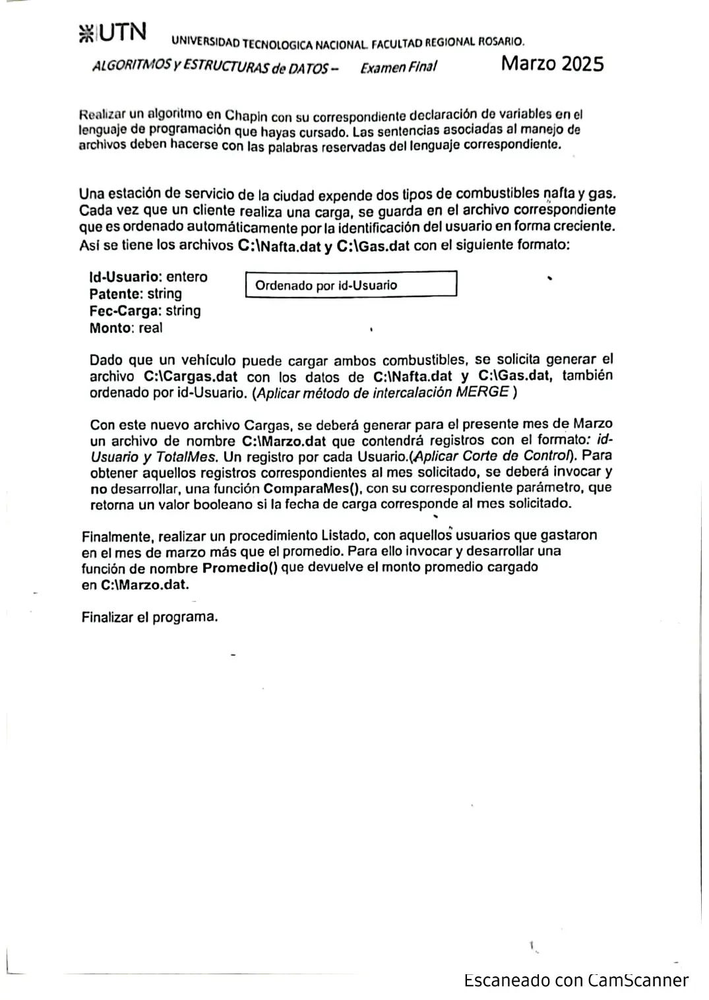
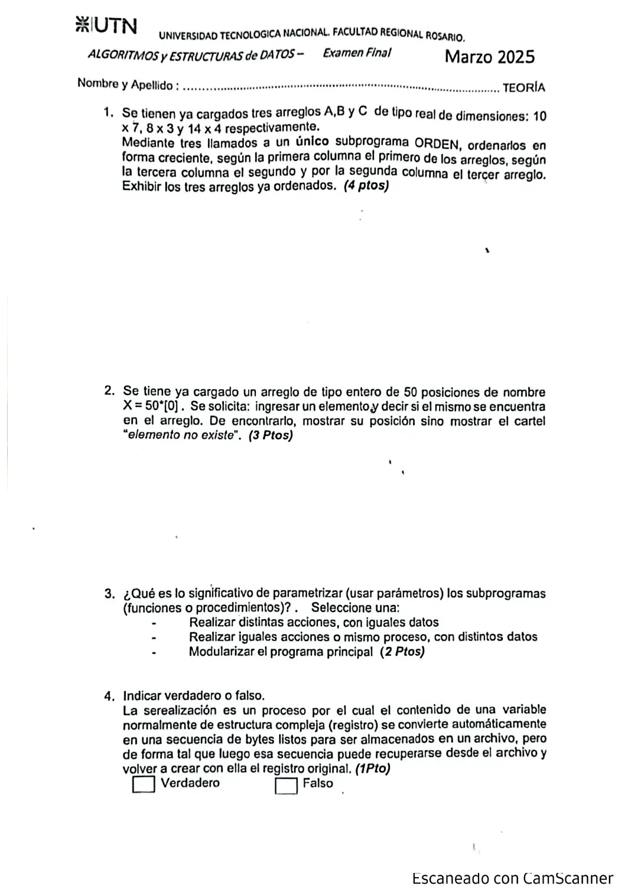

Final, marzo de 2025 (Estación de Servicio)
3° parcial y final, 12/03/2025
Enunciado




Propuesta de respuesta
Respuesta no verificada. La propuso Luta Studios con inteligencia artificial y ningún docente la revisó. Puede tener errores.
La hoja pide el diagrama de Chapin. Va un diagrama por módulo, con su declaración de variables arriba, y primero el del programa principal. Si un diagrama no entra en la pantalla, tocalo para verlo completo. Después de los diagramas está el mismo algoritmo en Python, para que lo puedas probar. Las sentencias de archivos van con las palabras reservadas de Python (open, pickle.load, pickle.dump, seek, tell). Los textos se completan con ljust para que los registros midan lo mismo. El tamaño de un registro sale de tell() después de leer el primero.
Programa principal
Cargas.dat con el merge
La salida del merge en las diapositivas
Las diapositivas preguntan i >= cantRegFisio al salir del ciclo. Con >= se pierde un registro cuando un archivo se termina y al otro le queda uno solo. Por eso esta decisión pregunta i > cantN, que lo graba.
Marzo.dat con corte de control
Promedio y Listado
El mismo algoritmo en Python
Es el programa que se probó, con las mismas sentencias y en el mismo orden que las cajas. Cada Leer del diagrama es un input, convertido a int o float según la declaración, y cada Mostrar es un print.
import os
import pickle
class Carga:
def __init__(self):
self.idUsuario = 0
self.patente = ""
self.fecCarga = ""
self.monto = 0.0
class Mes:
def __init__(self):
self.idUsuario = 0
self.totalMes = 0.0
# afNafta, afGas, afCargas, afMarzo: str
# alNafta, alGas, alCargas, alMarzo: archivo
afNafta = "C:\\Nafta.dat"
afGas = "C:\\Gas.dat"
afCargas = "C:\\Cargas.dat"
afMarzo = "C:\\Marzo.dat"
def INTERCALO():
# Merge con la cantidad de registros, como la diapositiva de la cátedra
# Necesita que los dos archivos tengan al menos un registro
# tamReg, cantN, cantG, i, j, k: int
# regN, regG: Carga
alNafta.seek(0, 0)
regN = pickle.load(alNafta)
tamReg = alNafta.tell()
cantN = os.path.getsize(afNafta) // tamReg
alGas.seek(0, 0)
regG = pickle.load(alGas)
cantG = os.path.getsize(afGas) // tamReg
i = 1
j = 1
while i <= cantN and j <= cantG:
if regN.idUsuario < regG.idUsuario:
pickle.dump(regN, alCargas)
if i != cantN:
regN = pickle.load(alNafta)
i = i + 1
else:
pickle.dump(regG, alCargas)
if j != cantG:
regG = pickle.load(alGas)
j = j + 1
if i > cantN:
for k in range(j, cantG + 1):
pickle.dump(regG, alCargas)
if k != cantG:
regG = pickle.load(alGas)
else:
for k in range(i, cantN + 1):
pickle.dump(regN, alCargas)
if k != cantN:
regN = pickle.load(alNafta)
alCargas.flush()
def CORTE_DE_CONTROL():
# tam, ant, pos: int
# total: float
# corte: bool
# reg: Carga
# rm: Mes
tam = os.path.getsize(afCargas)
alCargas.seek(0, 0)
while alCargas.tell() < tam:
reg = pickle.load(alCargas)
ant = reg.idUsuario
total = 0
corte = False
while not corte:
if ComparaMes(reg.fecCarga):
total = total + reg.monto
if alCargas.tell() < tam:
pos = alCargas.tell()
reg = pickle.load(alCargas)
if reg.idUsuario != ant:
corte = True
alCargas.seek(pos, 0) # retrocedo un registro
else:
corte = True
if total > 0:
rm = Mes()
rm.idUsuario = ant
rm.totalMes = total
pickle.dump(rm, alMarzo)
alMarzo.flush()
def Promedio():
# tam, cant: int
# suma: float
# rm: Mes
tam = os.path.getsize(afMarzo)
suma = 0
cant = 0
alMarzo.seek(0, 0)
while alMarzo.tell() < tam:
rm = pickle.load(alMarzo)
suma = suma + rm.totalMes
cant = cant + 1
if cant == 0:
return 0
else:
return suma / cant
def Listado():
# tam: int
# prom: float
# rm: Mes
prom = Promedio()
print("Promedio de marzo:", prom)
print("Usuarios que gastaron más que el promedio")
tam = os.path.getsize(afMarzo)
alMarzo.seek(0, 0)
while alMarzo.tell() < tam:
rm = pickle.load(alMarzo)
if rm.totalMes > prom:
print(rm.idUsuario, rm.totalMes)
# Programa principal
alNafta = open(afNafta, "rb")
alGas = open(afGas, "rb")
alCargas = open(afCargas, "w+b")
alMarzo = open(afMarzo, "w+b")
INTERCALO()
CORTE_DE_CONTROL()
Listado()
alNafta.close()
alGas.close()
alCargas.close()
alMarzo.close()Teoría 1
Un solo subprograma recibe la matriz, sus filas, sus columnas y la columna por la que ordena. Cuando dos filas están fuera de orden, se mueve la fila entera con un for más.
El mismo algoritmo en Python, para probarlo.
# A: matriz [0..9][0..6] de float (ya cargada)
# B: matriz [0..7][0..2] de float (ya cargada)
# C: matriz [0..13][0..3] de float (ya cargada)
def ORDEN(M, filas, cols, col):
# M: matriz de float (se modifica adentro)
# filas, cols, col, i, k, j: int
# aux: float
for i in range(filas - 1):
for k in range(i + 1, filas):
if M[i][col] > M[k][col]:
for j in range(cols):
aux = M[i][j]
M[i][j] = M[k][j]
M[k][j] = aux
def MOSTRAR(M, filas, cols):
# M: matriz de float
# filas, cols, i, j: int
for i in range(filas):
for j in range(cols):
print(M[i][j], end=" ")
print()
# Programa principal
ORDEN(A, 10, 7, 0)
ORDEN(B, 8, 3, 2)
ORDEN(C, 14, 4, 1)
MOSTRAR(A, 10, 7)
MOSTRAR(B, 8, 3)
MOSTRAR(C, 14, 4)Teoría 2
El mismo algoritmo en Python, para probarlo.
# X: arreglo [0..49] de int (ya cargado)
# dato, i: int
dato = int(input("Elemento: "))
i = 0
while i < 49 and X[i] != dato:
i = i + 1
if X[i] == dato:
print("Está en la posición", i)
else:
print("elemento no existe")Teoría 3
Realizar iguales acciones o mismo proceso, con distintos datos.
Teoría 4
Verdadero. Es lo que hacen pickle.dump, que graba el registro en el archivo, y pickle.load, que lo vuelve a armar al leerlo.
Respuesta no verificada. Puede tener errores.
Se armó con la hoja del examen y la página del 3° parcial y final (registros como clase, recorrer, búsquedas, actualizar un registro y alta). Las operaciones de archivos siguen las diapositivas de merge y corte de control. El Chapin sigue la forma de las diapositivas del examen de Historia Clínica de 2019. El merge cuenta registros, como la primera forma de las diapositivas, y el corte de control retrocede un registro como dicen esas diapositivas. La teoría 3 es la respuesta del Autotest 2 que está en la página.
Quedó en duda: Las diapositivas preguntan i >= cantRegFisio al salir del ciclo del merge. Con >=, si un archivo se termina cuando al otro le queda un solo registro, ese registro no se graba. Probado con 1 y 9 contra 2 y 3, se pierde el 9. Acá va i > cantN. El merge necesita que Nafta.dat y Gas.dat tengan al menos un registro cada uno, como avisa la página. Con ids iguales graba primero el de Gas, porque la hoja no da un criterio. Si un usuario no cargó en marzo, no se graba en Marzo.dat. La hoja dice «un registro por cada usuario», y si se graban todos, los que tienen 0 bajan el promedio. ComparaMes recibe la fecha de carga y no se programa. La teoría 4 no tiene respuesta en el material. Ningún apunte de la cátedra define la serialización, y se marcó Verdadero por lo que hace pickle en la página de archivos. Preguntalo en tu comisión. La respuesta de la teoría 3 es la del Autotest 2 de 2021, que la página sigue usando de respaldo. En la teoría 2 la posición se muestra desde 0, como el índice de Python. Las diapositivas de la materia no muestran en Chapin la lectura de datos ni la selección múltiple. Acá van como Leer y como Según, con una columna por caso.
¿Cómo te fue?
Marcá cada tema del examen.
- MergeMerge de arreglos, en 2° parcial
- Corte de controlCorte de control, en 1° parcial
- TeoríaLa parte de teoría, en 3° parcial y final